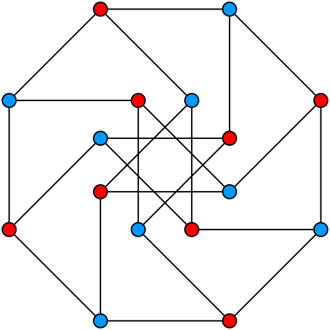
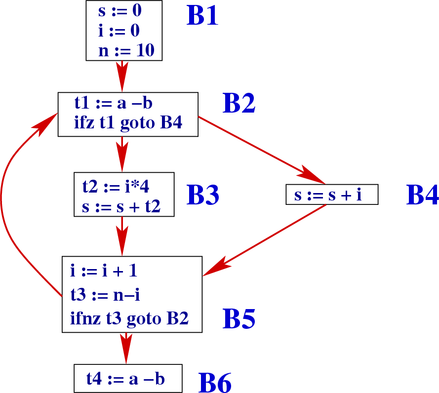
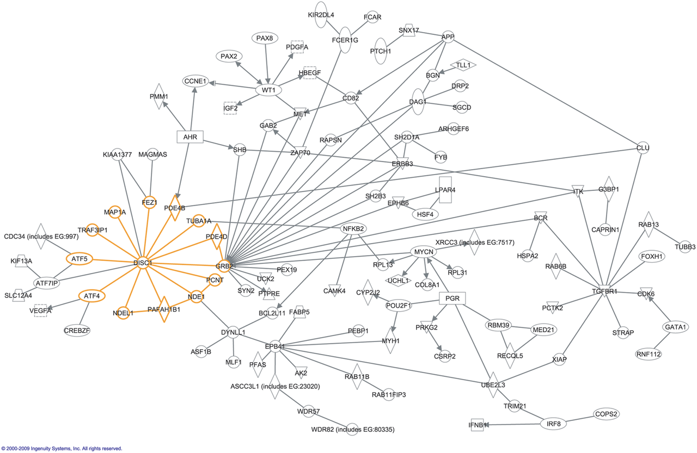
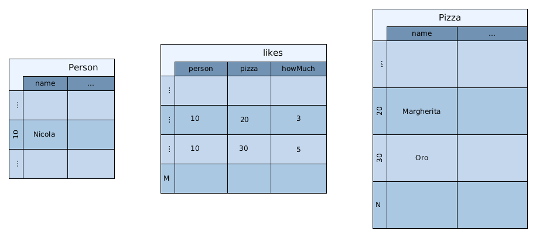
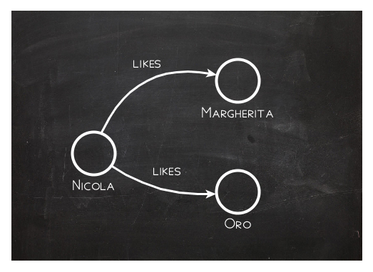
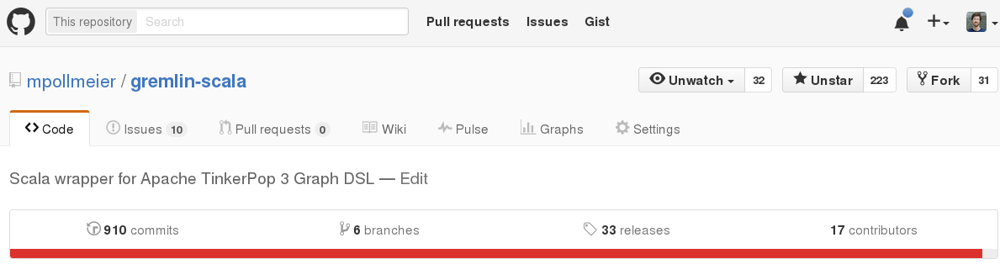

http://michaelpollmeier.com
https://github.com/mpollmeier/gremlin-scala/
Graph theory started in the 18th century
- a set of vertices
- a set of edges between vertices
Graph in computer science
compiler optimizations
Graph in Web
the WWW (hypertexts)
Engineering
pipe network analysis
Electrical engineering
circuit theory
Linguistics

language models
Biology
gene interactions
Social Networks

Relational model
Graph model
just as you would draw it
RDB: find pizzas liked by Nicola
- given a Person (Nicola)
- find Nicola (id=10) in likes table: O(log N)
- find 'Margherita' and 'Oro' in Pizza table: O(log N)
SELECT pizza.name
FROM
Person as person
JOIN Likes as likes ON person.id = likes.person
JOIN Pizza as pizza ON likes.pizza = pizza.id AND
WHERE person.id = 10
Gremlin: find pizzas liked by Nicola
- given a Person (Nicola)
- follow all likes edges: O(1)
graph.V(10).out("likes")
Create vertices and edges
val graph = TinkerGraph.open.asScala
// typed keys
val Founded = Key[String]("founded")
val Distance = Key[Int]("distance")
// two vertices
val paris = graph + "Paris"
val london = graph + ("London", Founded → "43 AD")
// some edges
paris --- "OneWayRoad" --> london
paris <-- "OtherWayAround" --- london
paris <-- "Eurostar" --> london
paris --- ("Eurostar", Distance → 495) --> london
Compile time safety #1
paris.out("Eurostar").value(Founded).head //43 AD : String
paris.outE("Eurostar").value(Distance).head //495 : Int
Compile time safety #2
graph.V.outE.inV //compiles
graph.V.outE.outE //does _not_ compile
Compile time safety #3
paris.as("x")
.outE("Eurostar").as("y")
.value(Distance).as("z").select
// returns `(Vertex, Edge, Int)` for each path
For comprehensions
for {
person <- graph.V.hasLabel("person")
favorite <- person.outE("likes")
.orderBy("weight", Order.decr)
.limit(1)
.inV
} yield (person, favorite.label)
// returns (Vertex, String)
Mapping vertices from/to case classes
@label("example")
case class Example(@id id: Option[Int],
longValue: Long,
stringValue: Option[String])
val example = Example(None, Long.MaxValue, Some("optional value"))
val v: Vertex = graph + example
v.toCC[Example] // equal to `example`, but with id set
graph.V.hasLabel[Example]
 https://github.com/mpollmeier/gremlin-scala